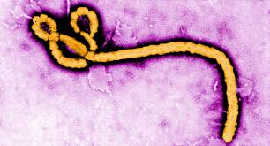
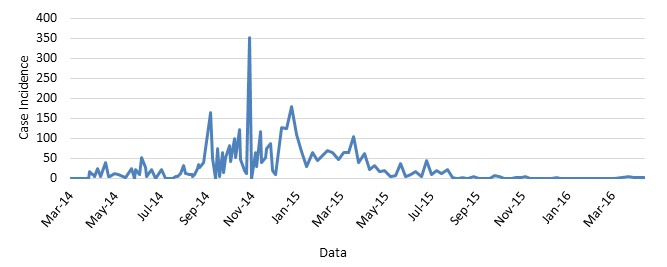
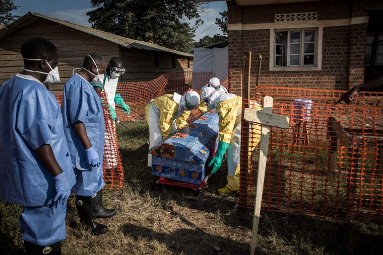

What is Ebola?
Ebola is a virus that targets cells that are located in your liver, immune system, and the endothelial which lines up inside the blood vessels. Once the Ebola is in your system the protein from the virus (glycoprotein) causes your cells to lose adhesion. This means both the healthy tissue and the cells will have trouble sticking together. This all causes the host to have hemorrhaging and internal bleeding.
Where did Ebola originate from?
It first originated in several West African countries. However it was discovered in 1976 near the Ebola river which is how the virus got its name. Not only that, within the same year the carriers for this deadly virus were and still is in wild animals. The first main carriers are bats especially fruit bats. Eventually, monkeys,chimpanzees, and small African antelope got infected by the bats feces.

The Infected and Outbreaks.
Ebola affects many people, especially people in low-income areas. For example, Guinea, Sierra Leone, Liberia, and many more. This is due to the lack of health care within the areas. The most famous outbreak of Ebola happened between December 2013 and June 2016. There were about 28,646 huaman cases durig that year and about 11,000 people who died before 2016. The most recent case was in August 2018 which has 2,734 huamn cases.

Why Ebola matters?
Ebola is a very serious disease which is unfortunately affecting many people in the world . It may not affect America but it does affect low income countries that struggle to treat communicable diseases. There is currently no vaccine nor cure to treat this type of disease. Ebola can be easily spread through any form of body contact, this includes, touching an infected person who is either dead/ alive. Not only does it not have a cure but the incubation period is short and can take up to 2-21 days. Even with the short incubation period the person can die very quickly. Not many survive but those who do many tried to get treatment early.